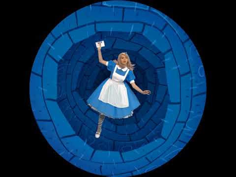
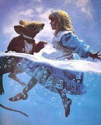
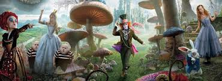

Глава 1. Вниз по кроличьей норе
Алисе наскучило сидеть с сестрой без дела на берегу реки; разок-другой она заглянула в книжку, которую читала сестра, но там не было ни картинок, ни разговоров.
- Что толку в книжке, - подумала Алиса, - если в ней нет ни картинок, ни разговоров?
Она сидела и размышляла, не встать ли ей и не нарвать ли цветов для венка; мысли ее текли медленно и несвязно - от жары ее клонило в сон. Конечно, сплести венок было бы очень приятно, но стоит ли ради этого подыматься?
Вдруг мимо пробежал белый кролик с красными глазами
Конечно, ничего удивительного в этом не было. Правда, Кролик на бегу говорил:
- Ах, боже мой, боже мой! Я опаздываю.
Но и это не показалось Алисе особенно странным. (Вспоминая об этом позже, она подумала, что ей следовало бы удивиться, однако в тот миг все казалось ей вполне естественным.) Но, когда Кролик вдруг вынул часы из жилетного кармана и, взглянув на них, помчался дальше, Алиса вскочила на ноги. Ее тут осенило: ведь никогда раньше она не видела кролика с часами, да еще с жилетным карманом в придачу! Сгорая от любопытства, она побежала за ним по полю и только-только успела заметить, что он юркнул в нору под изгородью.
В тот же миг Алиса юркнула за ним следом, не думая о том, как же она будет выбираться обратно. Нора сначала шла прямо, ровная, как туннель, а потом вдруг круто обрывалась вниз. Не успела Алиса и глазом моргнуть, как она начала падать, словно в глубокий колодец. То ли колодец был очень глубок, то ли падала она очень медленно, только времени у нее было достаточно, чтобы прийти в себя и подумать, что же будет дальше. Сначала она попыталась разглядеть, что ждет ее внизу, но там было темно, и она ничего не увидела. Тогда она принялась смотреть по сторонам. Стены колодца были уставлены шкафами и книжными полками; кое-где висели на гвоздиках картины и карты. Пролетая мимо одной из полок, она прихватила с нее банку с вареньем. На банке было написано «АПЕЛЬСИНОВОЕ», но увы! она оказалась пустой. Алиса побоялась бросить банку вниз - как бы не убить кого-нибудь! На лету она умудрилась засунуть ее в какой-то шкаф.
- Вот это упала, так упала! - подумала Алиса. - Упасть с лестницы теперь для меня пара пустяков. А наши решат, что я ужасно смелая. Да свались я хоть с крыши, я бы и то не пикнула
Вполне возможно, что так оно и было бы.
А она все падала и падала. Неужели этому не будет конца?
- Интересно, сколько миль я уже пролетела? - сказала Алиса вслух. - Я, верно, приближаюсь к центру земли. Дайте-ка вспомнить... Это, кажется, около четырех тысяч миль вниз...
Видишь ли, Алиса выучила кое-что в этом роде на уроках в классной, и, хоть сейчас был не самый подходящий момент демонстрировать свои познания - никто ведь ее не слышал, - она не могла удержаться.
- Да так, верно, оно и есть, - продолжала Алиса. - Но интересно, на какой же я тогда широте и долготе?
Сказать по правде, она понятия не имела о том, что такое широта и долгота, но ей очень нравились эти слова. Они звучали так важно и внушительно!
Помолчав, она начала снова:
- А не пролечу ли я всю землю насквозь? Вот будет смешно! Вылезаю - а люди вниз головой! Как их там зовут?.. Антипатии, кажется...
В глубине души она порадовалась, что в этот миг ее никто не слышит, потому что слово это звучало как-то не так.
- Придется мне у них спросить, как называется их страна. «Простите, сударыня, где я? В Австралии или в Новой Зеландии?»
И она попробовала сделать реверанс. Можешь себе представить реверанс в воздухе во время падения? Как, по-твоему, тебе бы удалось его сделать?
- А она, конечно, подумает, что я страшная, невежда! Нет, не буду никого спрашивать! Может, увижу где-нибудь надпись! А она все падала и падала. Делать нечего - помолчав, Алиса снова заговорила.
- Дина будет меня сегодня весь вечер искать. Ей без меня так скучно!
Диной звали их кошку.
- Надеюсь, они не забудут в полдник налить ей молочка... Ах, Дина, милая, как жаль, что тебя со мной нет. Правда, мышек в воздухе нет, но зато мошек хоть отбавляй! Интересно, едят ли кошки мошек?
Тут Алиса почувствовала, что глаза у нее слипаются. Она сонно бормотала:
Видишь ли, Алиса выучила кое-что в этом роде на уроках в классной, и, хоть сейчас был не самый подходящий момент демонстрировать свои познания - никто ведь ее не слышал, - она не могла удержаться. - Да так, верно, оно и есть, - продолжала Алиса. - Но интересно, на какой же я тогда широте и долготе? Сказать по правде, она понятия не имела о том, что такое широта и долгота, но ей очень нравились эти слова. Они звучали так важно и внушительно! Помолчав, она начала снова: - А не пролечу ли я всю землю насквозь? Вот будет смешно! Вылезаю - а люди вниз головой! Как их там зовут?.. Антипатии, кажется... В глубине души она порадовалась, что в этот миг ее никто не слышит, потому что слово это звучало как-то не так. - Придется мне у них спросить, как называется их страна. «Простите, сударыня, где я? В Австралии или в Новой Зеландии?» И она попробовала сделать реверанс. Можешь себе представить реверанс в воздухе во время падения? Как, по-твоему, тебе бы удалось его сделать? - А она, конечно, подумает, что я страшная, невежда! Нет, не буду никого спрашивать! Может, увижу где-нибудь надпись! А она все падала и падала. Делать нечего - помолчав, Алиса снова заговорила. - Дина будет меня сегодня весь вечер искать. Ей без меня так скучно! Диной звали их кошку. - Надеюсь, они не забудут в полдник налить ей молочка... Ах, Дина, милая, как жаль, что тебя со мной нет. Правда, мышек в воздухе нет, но зато мошек хоть отбавляй! Интересно, едят ли кошки мошек? Тут Алиса почувствовала, что глаза у нее слипаются. Она сонно бормотала: - Едят ли кошки мошек? Едят ли кошки мошек? Иногда у нее получалось: - Едят ли мошки кошек? Алиса не знала ответа ни на первый, ни на второй вопрос, и потому ей было все равно, как их ни задать. Она чувствовала, что засыпает. Ей уже снилось, что она идет об руку с Диной и озабоченно спрашивает ее: - Признайся, Дина, ты когда-нибудь ела мошек? Тут раздался страшный треск. Алиса упала на кучу валежника и сухих листьев. Она ничуть не ушиблась и быстро вскочила на ноги. Взглянула наверх - там было темно. Перед ней тянулся другой коридор, а в конце его мелькнул Белый Кролик. Нельзя было терять ни минуты, и Алиса помчалась за ним следом. Она слышала, как, исчезая за поворотом, Кролик произнес: - Ах, мои усики! Ах, мои ушки! Как я опаздываю! Повернув за угол, Алиса ожидала тут же увидеть Кролика, но его нигде не было. А она очутилась в длинном низком зале, освещенном рядом ламп, свисавших с потолка. Дверей в зале было множество, но все оказались заперты. Алиса попробовала открыть их - сначала с одной стороны, потом с другой, но, убедившись, что ни одна не поддается, она прошла по залу, с грустью соображая, как ей отсюда выбраться. Вдруг она увидела стеклянный столик на трех ножках. На нем не было ничего, кроме крошечного золотого ключика. Алиса решила, что это ключ от одной из дверей, но увы! - то ли замочные скважины были слишком велики, то ли ключик слишком мал, только он не подошел ни к одной, как она ни старалась. Пройдясь но залу во второй раз, Алиса увидела занавеску, которую не заметила раньше, а за ней оказалась маленькая дверца дюймов в пятнадцать вышиной. Алиса вставила ключик в замочную скважину - и, к величайшей ее радости, он подошел! Она открыла дверцу и увидела за ней нору, совсем узкую, не шире крысиной. Алиса встала на колени и заглянула в нее - в глубине виднелся сад удивительной красоты. Ах, как ей захотелось выбраться из темного зала и побродить между яркими цветочными клумбами и прохладными фонтанами! Но она не могла просунуть в нору даже голову. - Если б моя голова и прошла, - подумала бедная Алиса, - что толку! Кому нужна голова без плечей? Ах, почему я не складываюсь, как подзорная труба! Если б я только знала, с чего начать, я бы, наверно, сумела. Видишь ли, в тот день столько было всяких удивительных происшествий, что ничто не казалось ей теперь совсем не возможным. Сидеть у маленькой дверцы не было никакого смысла, и Алиса вернулась к стеклянному столику, смутно надеясь найти на нем другой ключ или на худой конец руководство к складыванию наподобие подзорной трубы. Однако на этот раз на столе оказался пузырек. - Я совершенно уверена, что раньше его здесь не было! - сказала про себя Алиса. К горлышку пузырька была привязана бумажка, а на бумажке крупными красивыми буквами было написано: «ВЫПЕЙ МЕНЯ!» Это, конечно, было очень мило, но умненькая Алиса совсем не торопилась следовать совету. - Прежде всего надо убедиться, что на этом пузырьке нигде нет пометки: « Яд! » - сказала она. Видишь ли, она начиталась всяких прелестных историй о том, как дети сгорали живьем или попадали на съедение диким зверям, - и все эти неприятности происходили с ними потому, что они не желали соблюдать простейших правил, которым обучали их друзья: если слишком долго держать в руках раскаленную докрасна кочергу, в конце концов обожжешься; если поглубже полоснуть по пальцу ножом, из пальца обычно идет кровь; если разом осушить пузырек с пометкой «Яд!», рано или поздно почти наверняка почувствуешь недомогание. Последнее правило Алиса помнила твердо. Однако на этом пузырьке никаких пометок не было, и Алиса рискнула отпить из него немного. Напиток был очень приятен на вкус - он чем-то напоминал вишневый пирог с кремом, ананас, жареную индейку, сливочную помадку и горячие гренки с маслом. Алиса выпила его до конца. - Какое странное ощущение! - воскликнула Алиса. - Я, верно, складываюсь, как подзорная труба. И не ошиблась - в ней сейчас было всего десять дюймов росту. Она подумала, что теперь легко пройдет сквозь дверцу в чудесный сад, и очень обрадовалась. Но сначала на всякий случай она немножко подождала - ей хотелось убедиться, что больше она не уменьшается. Это ее слегка тревожило. - Если я и дальше буду так уменьшаться, - сказала она про себя, - я могу я вовсе исчезнуть. Сгорю как свечка! Интересно, какая я тогда буду? И она постаралась представить себе, как выглядит пламя свечи после того, как свеча потухнет. Насколько ей помнилось, такого она никогда не видала. Подождав немного и убедившись, что больше ничего не происходит, она решила тотчас же выйти в сад. Бедняжка! Подойдя к дверце, она обнаружила, что забыла золотой ключик на столе, а вернувшись к столу, поняла, что ей теперь до него не дотянуться. Сквозь стекло она ясно видела снизу лежащий на столе ключик. Она попыталась взобраться на стол по стеклянной ножке, но ножка была очень скользкая. Устав от напрасных усилий, бедная Алиса села на пол и заплакала. - Ну, хватит! - строго приказала она себе немного спустя. - Слезами горю не поможешь. Советую тебе сию же минуту перестать! Она всегда давала себе хорошие советы, хоть следовала им нечасто. Порой же ругала себя так беспощадно, что глаза ее наполнялись слезами. А однажды она даже попыталась отшлепать себя по щекам за то, что схитрила, играя в одиночку партию в крокет. Эта глупышка очень любила притворяться двумя разными девочками сразу. - Но сейчас это при всем желании невозможно! - подумала бедная Алиса. - Меня и на одну-то едва-едва хватает! Тут она увидела под столом маленькую стеклянную коробочку. Алиса открыла ее - внутри был пирожок, на котором коринками было красиво написано: «СЪЕШЬ МЕНЯ!» - Что ж, - сказала Алиса, - я так и сделаю. Если при этом я вырасту, я достану ключик, а если уменьшусь - пролезу под дверь. Мне бы только попасть в сад, а как - все равно! Она откусила от пирожка и с тревогой подумала: - Расту или уменьшаюсь? Расту или уменьшаюсь? Руку Алиса при этом положила на макушку, чтобы чувствовать, что с ней происходит. Но, к величайшему ее удивлению, она не стала ни выше, ни ниже. Конечно, так всегда и бывает, когда ешь пирожки, но Алиса успела привыкнуть к тому, что вокруг происходит одно только удивительное; ей показалось скучно и глупо, что жизнь опять пошла по-обычному. Она откусила еще кусочек и вскоре съела весь пирожок
Глава 2. Море слёз
- Все страньше и страньше! - вскричала Алиса. От изумления она совсем забыла, как нужно говорить. - Я теперь раздвигаюсь, словно подзорная труба. Прощайте, ноги! (В эту минуту она как раз взглянула на ноги и увидела, как стремительно они уносятся вниз. Еще мгновение - и они скроются из виду.) - Бедные мои ножки! Кто же вас будет теперь обувать? Кто натянет на вас чулки и башмаки? Мне же до вас теперь, мои милые, не достать. Мы будем так далеки друг от друга, что мне будет совсем не до вас... Придется вам обходиться без меня. Тут она призадумалась. - Все-таки надо быть с ними поласковее, - сказала она про себя. - А то еще возьмут и пойдут не в ту сторону. Ну, ладно! На рождество буду посылать им в подарок новые ботинки. И она принялась строить планы. - Придется отправлять их с посыльным, - думала она. - Вот будет смешно! Подарки собственным ногам! И адрес какой странный! «Каминный Коврик (что возле Каминной Решетки) Госпоже Правой Ноге - С приветом от Алисы». - Ну что за вздор я несу! В эту минуту она ударилась головой о потолок: ведь она вытянулась футов до девяти, не меньше. Тогда она схватила со стола золотой ключик и побежала к двери в сад. Бедная Алиса! Разве могла она теперь пройти в дверцу? Ей удалось лишь заглянуть в сад одним глазком - и то для этого пришлось лечь на пол. Надежды на то, чтобы пройти в нору, не было никакой. Она уселась на пол и снова расплакалась. - Стыдись, - сказала себе Алиса немного спустя. - Такая большая девочка (тут она, конечно, была права) - и плачешь! Сейчас же перестань, слышишь? Но слезы лились ручьями, и вскоре вокруг нее образовалась большая лужа дюйма в четыре глубиной. Вода разлилась по полу и уже дошла до середины зала. Немного спустя вдалеке послышался топот маленьких ног. Алиса торопливо вытерла глаза и стала ждать. Это возвращался Белый Кролик. Одет он был парадно, в одной руке держал пару лайковых перчаток, а в другой - большой веер. На бегу он тихо бормотал: - Ах, боже мой, что скажет Герцогиня! Она будет в ярости, если я опоздаю! Просто в ярости! Алиса была в таком отчаянии, что готова была обратиться за помощью к кому угодно. Когда Кролик поравнялся с нею, она робко прошептала: - Простите, сэр... Кролик подпрыгнул, уронил перчатки и веер, метнулся прочь и тут же исчез в темноте. Алиса подняла веер и перчатки. В зале было жарко, и она стала обмахиваться веером. - Нет, вы только подумайте! - говорила она. - Какой сегодня день странный! А вчера все шло, как обычно! Может это я изменилась за ночь? Дайте-ка вспомнить: сегодня утром, когда я встала, я это была или не я? Кажется, уже не совсем я! Но если это так, то кто же я в таком случае? Это так сложно... И она принялась перебирать в уме подружек, которые были с ней одного возраста. Может, она превратилась в одну из них? - Во всяком случае, я не Ада! - сказала она решительно. - У нее волосы вьются, а у меня нет! И уж, конечно, я не Мейбл. Я столько всего знаю, а она совсем ничего! И вообще она это она, а я это я! Как все непонятно! А ну-ка проверю, помню я то, что знала, или нет. Значит так: четырежды пять - двенадцать, четырежды шесть - тринадцать, четырежды семь... Так я до двадцати никогда не дойду! Ну, ладно, таблица умножения - это неважно! Попробую географию! Лондон - столица Парижа, а Париж - столица Рима, а Рим... Нет, все не так, все неверно! Должно быть, я превратилась в Мейбл... Попробую прочитать « Как дорожит...» Она сложила руки на коленях, словно отвечала урок, и начала. Но голос ее зазвучал как-то странно, будто кто-то другой хрипло произносил за нее совсем другие слова: Как дорожит своим хвостом Малютка крокодил! - Урчит и вьется над песком Прилежно пенит Нил! Как он умело шевелит Опрятным коготком! - Как рыбок он благодарит, Глотая целиком! - Слова совсем не те! - сказала бедная Алиса, и глаза у нее снова наполнились слезами. - Значит, я все-таки Мейбл! Придется мне теперь жить в этом старом домишке. И игрушек у меня совсем не будет! Зато уроки надо будет учить без конца. Ну что ж, решено: если я Мейбл, останусь здесь навсегда. Пусть тогда попробуют, придут сюда за мной! Свесят, головы вниз, станут звать: «Подымайся, милочка, к нам». А я на них только посмотрю и отвечу: «Скажите мне сначала, кто я! Если мне это понравится, я поднимусь, а если нет - останусь здесь, пока не превращусь в кого-нибудь другого!» Тут слезы брызнули у нее из глаз. - Почему за мной никто не приходит? Как мне надоело сидеть здесь одной! С этими словами Алиса глянула вниз и, к своему удивлению, заметила, что, пока говорила, натянула на одну руку крошечную перчатку Кролика. - Как это мне удалось? - подумала она. - Видно, я опять уменьшаюсь. Алиса встала и подошла к столику, чтобы выяснить, какого она теперь роста. Судя по всему, в ней было не больше двух футов, и она продолжала стремительно уменьшаться. Вскоре она поняла, что виной тому веер, который она держала в руках, и тут же швырнула его на пол. И хорошо сделала - а то могла бы и вовсе исчезнуть! - Уф! Едва спаслась! - сказала Алиса, испуганная столь внезапной переменой, но радуясь, что уцелела. - А теперь - в сад! И она подбежала к дверце. Но увы! Дверца опять была заперта, а золотой ключик так и лежал на стеклянном столе. - Час от часу не легче! - подумала бедная Алиса. - Такой крошкой я еще не была ни разу! Плохо мое дело! Хуже некуда... Тут она поскользнулась и - бух! - шлепнулась в воду. Вода была соленая на вкус и доходила ей до подбородка. Сначала она подумала, что каким-то образом упала в море. - В таком случае, - подумала она, - можно уехать по железной дороге. Алиса всего раз в жизни была на взморье, и потому ей казалось, что все там одинаково: в море - кабинки для купания, на берегу - малыши с деревянными лопатками строят замки из песка; потом - пансионы, а за ними - железнодорожная станция. Вскоре, однако, она поняла, что упала в лужу слез, которую сама же и наплакала, когда была ростом в девять футов. - Ах, зачем я так ревела! - подумала Алиса, плавая кругами и пытаясь понять, в какой стороне берег. - Вот глупо будет, если я утону в собственных слезах! И поделом мне! Конечно, это было бы очень странно! Впрочем, сегодня все странно! Тут она услышала какой-то плеск неподалеку и поплыла туда, чтобы узнать, кто это там плещется. Сначала она решила, что это морж или гиппопотам, но потом вспомнила, какая она теперь крошка, и, вглядевшись, увидала всего лишь мышь, которая, видно, также упала в воду. - Заговорить с ней или нет? - подумала Алиса. - Сегодня все так удивительно, что, возможно, и она умеет говорить! Во всяком случае, попытаться стоит! И она начала: - О Мышь! Не знаете ли вы, как выбраться из этой лужи? Мне так надоело здесь плавать, о Мышь! Алиса считала, что именно так и следует обращаться к мышам. Опыта у нее никакого не было, но она вспомнила учебник латинской грамматики, принадлежащий ее брату. «Именительный - Мышь, Родительный - Мыши, Дательный - Мыши, Винительный - Мышь, Звательный - О Мышь!» Мышь взглянула на нее с недоумением и легонько ей подмигнула (так, во всяком случае, показалось Алисе), но не сказала в ответ ни слова. - Может, она по-английски не понимает? - подумала Алиса. - Вдруг она француженка родом? Приплыла сюда вместе с Вильгельмом Завоевателем... Хоть Алиса и гордилась своим знанием истории, она не очень ясно представляла себе, что когда происходило. И она опять начала: - Ou est ma chatte? {Где моя кошка? (франц.).} В учебнике французского языка эта фраза стояла первой. Мышь рванулась из воды и вся затрепетала от ужаса. - Простите! - быстро сказала Алиса, видя, что обидела бедного зверька. - Я забыла, что вы не любите кошек. - Не люблю кошек? - вскричала пронзительно Мышь. - А ты бы их на моем месте любила? - Наверно, нет, - попробовала успокоить ее Алиса. - Прошу вас, не сердитесь! Жаль, что я не могу показать вам нашу Дину. Если б вы только ее увидели, вы бы, мне кажется, полюбили кошек. Она такая милая, такая спокойная, - задумчиво продолжала Алиса, лениво плавая в соленой воде. - Сидит себе у камина, мурлычет и умывается. И такая мягкая, так и хочется погладить! А как она ловит мышей!.. Ах, простите! Простите, пожалуйста! Шерстка у Мыши стала дыбом. Алиса поняла, что оскорбила ее до глубины души. - Если вам неприятно, не будем больше об этом говорить, - сказала Алиса. - Не будем? - вскричала Мышь, трепеща от головы до самого кончика хвоста. - Можно подумать, что я завела этот разговор! У нас в семье всегда ненавидели кошек. Низкие, гадкие, вульгарные твари! Слышать о них не желаю! - Хорошо, хорошо! - сказала Алиса, торопясь перевести разговор. - А... собак... вы любите? Мышь промолчала. - Рядом с нами живет такой милый песик! - радостно продолжала Алиса. - Мне бы очень хотелось вас с ним познакомить! Маленький терьер! Глаза у него блестящие, а шерстка коричневая, длинная и волнистая! Бросишь ему что-нибудь, он тотчас несет назад, а потом сядет на задние лапки и просит, чтобы ему дали косточку! Чего только он ни делает - всего не упомнишь! Хозяин у него фермер, он говорит: этому песику цены нет! Он всех крыс перебил в округе и всех мыш... Ах, боже мой! - грустно промолвила Алиса. - По-моему, я ее опять обидела! Мышь изо всех сил плыла от нее прочь, по воде даже волны пошли. - Мышка, милая! - ласково закричала ей вслед Алиса. - Прошу вас, вернитесь. Если кошки и собаки вам не по душе, я о них больше ни слова не скажу! Услышав это, Мышь повернула и медленно поплыла назад. Она страшно побледнела. («От гнева!» - подумала Алиса). - Вылезем на берег, - сказала Мышь тихим, дрожащим голосом, - и я расскажу тебе мою историю. Тогда ты поймешь, за что я ненавижу кошек и собак. И в самом деле надо было вылезать. В луже становилось все теснее от всяких птиц и зверей, упавших в нее. Там были Робин Гусь, Птица Додо, Попугайчик Лори, Орленок Эд и всякие другие удивительные существа. Алиса поплыла вперед, и все потянулись за ней к берегу
Глава 3. Бег по кругу и длинный рассказ
Общество, собравшееся на берегу, имело весьма неприглядный вид: перья у птиц взъерошены, шерстка у зверьков промокла насквозь. Вода текла с них ручьями, всем было холодно и неуютно. Прежде всего, конечно, нужно было решить, как поскорее высохнуть. Стали держать совет. Не прошло и нескольких минут, как Алиса уже чувствовала себя так, словно знала их всех целый век. Она даже поспорила с Попугайчиком Лори, который надулся и только твердил: - Я старше, чем ты, и лучше знаю, что к чему! Алиса потребовала, чтобы он сказал, сколько ему лет, но Попугайчик решительно отказался. На том спор и кончился. Наконец Мышь, к которой все относились с почтением, закричала: - Садитесь, все садитесь и слушайте. Вы у меня вмиг высохнете! Все послушно уселись в круг, а Мышь стала посредине. Алиса не отрывала от нее глаз - она знала, что если тут же не высохнет, ей грозит сильная простуда. - Гхе-гхе! - откашлялась с важным видом Мышь. - Все готовы? Тогда начнем. Это вас мигом высушит! Тишина! «Вильгельм Завоеватель с благословения папы римского быстро добился полного подчинения англосаксов, которые нуждались в твердой власти и видели на своем веку немало несправедливых захватов трона и земель. Эдвин, граф Мерсии, и Моркар, граф Нортумбрии...» - Д-да! - сказал Попугайчик и содрогнулся. - Простите, - спросила, нахмурясь, Мышь с чрезмерной учтивостью, - вы, кажется, что-то сказали? - Нет-нет, - поспешно ответил Попугайчик. - Звучит, мне показалось, - заметила Мышь. - Итак, я продолжаю. «Эдвин, граф Мерсии, и Моркар, граф Нортумбрии, поддержали Вильгельма Завоевателя, и даже Стиганд, архиепископ Кентерберийский, нашел это благоразумным...» - Что он нашел? - спросил Робин Гусь. - «... нашел это », - отвечала Мышь. - Ты что, не знаешь, что такое «это»? - Еще бы мне не знать, - отвечал Робин Гусь. - Когда я что-нибудь нахожу, это обычно бывает лягушка или червяк. Вопрос в том, что же нашел архиепископ? Мышь не удостоила его ответом и торопливо продолжала: - «...нашел это благоразумным и решил вместе с Эдгаром Зтелингом отправиться к Вильгельму и предложить ему корону. Поначалу Вильгельм вел себя очень сдержанно, но наглость его воинов норманцев...» Ну как, милочка, подсыхаешь? - спросила она Алису. - С меня так и льет, - ответила Алиса печально. - Я и не думаю сохнуть! - В таком случае, - провозгласил Додо, - я предлагаю принять резолюцию о немедленном роспуске собрания с целью принятия самых экстренных мер для скорейшего... - Говорите по-человечески, - сказал Орленок Эд. - Я и половины этих слов не знаю! Да и сами вы, по-моему, их не понимаете. И Орленок отвернулся, чтобы скрыть улыбку. Птицы тихо захихикали. - Я хотел сказать, - обиженно проговорил Додо, - что нужно устроить Бег по кругу. Тогда мы вмиг высохнем! - А что это такое? - спросила Алиса. Сказать по правде, ее это не очень интересовало, но Додо многозначительно молчал - видно, ждал вопроса. И, так как все тоже молчали, пришлось спрашивать Алисе. - Чем объяснять, - сказал Додо, - лучше показать! (Может, и ты захочешь как-нибудь зимой сыграть в эту игру? В таком случае я расскажу тебе, что делал Додо.) Сначала он нарисовал на земле круг. Правда, круг вышел не очень-то ровный, но Додо сказал: - Правильность формы несущественна! А потом расставил всех без всякого порядка по кругу. Никто не подавал команды - все побежали, когда захотели. Трудно было понять, как и когда должно кончиться это состязание. Через полчаса, когда все набегались и просохли, Додо вдруг закричал: - Бег закончен! Все столпились вокруг него и, тяжело дыша, стали спрашивать: - Кто же победил? На этот вопрос Додо не мог ответить, не подумав как следует. Он застыл на месте, приложив ко лбу палец (в такой позе обычно изображают Шекспира, помнишь?), и погрузился в размышления. А все стояли вокруг и молча ждали. Наконец, Додо произнес: - Победили все! И каждый получит награды! - А кто же их будет раздавать? - спросили все хором. - Она, конечно, - ответил Додо, ткнув пальцем в Алису. Все окружили Алису и наперебой закричали: - Награды! Награды! Раздавай награды! Алиса растерялась. В замешательстве она сунула руку в карман - и вытащила оттуда пакетик цукатов. (К счастью, слезы их не размочили.) Она раздала их собравшимся - каждому по цукату, только-только хватило. - Но она ведь тоже заслужила награду, - сказала Мышь. - Конечно, - подхватил важно Додо. И, повернувшись к Алисе, спросил: - У тебя осталось что-нибудь в кармане? - Нет, - отвечала Алиса грустно. - Только наперсток. - Давай его сюда! - приказал Додо. Тут все снова столпились вокруг Алисы, а Додо торжественно подал ей наперсток и сказал: - Мы просим тебя принять в награду этот изящный наперсток! Эта краткая речь была встречена общими рукоплесканиями. Алисе вся эта церемония показалась очень смешной, но вид у всех был такой серьезный, что она не посмела засмеяться. Она хотела ответить на речь Додо, но не могла ничего придумать и только чинно поклонилась и взяла наперсток. Все принялись за угощенье. Поднялся страшный шум и переполох. Большие птицы мигом проглотили свои цукаты и начали жаловаться, что и распробовать их не успели. А у птичек поменьше цукаты застряли в горле - пришлось хлопать их по спине. Наконец, все поели, уселись опять в круг и попросили Мышь рассказать им еще что-нибудь. - Вы обещали рассказать нам свою историю, - сказала Алиса. - И почему вы ненавидите... К и С. Последнюю фразу она произнесла шепотом, боясь, как бы не обидеть Мышь снова. - Это очень длинная и грустная история, - начала Мышь со вздохом. Помолчав, она вдруг взвизгнула: - Прохвост! - Про хвост? - повторила Алиса с недоумением и взглянула на ее хвост. - Грустная история про хвост? И, пока Мышь говорила, Алиса все никак не могла понять, какое это имеет отношение к мышиному хвосту. Поэтому история, которую рассказала Мышь, выглядела в ее воображении вот так: Цап царап сказал мышке: Вот какие делишки, мы пойдем с тобой в суд, я тебя засужу. И не смей отпираться, мы должны расквитаться, потому что все утро я без дела сижу. И на это нахалу мышка так отвечала: Без суда и без следствия, сударь, дел не ведут. - Я и суд, я и следствие, - Цап-царап ей ответствует. - Присужу тебя к смерти я. Тут тебе и капут. - Ты не слушаешь! - строго сказала Алисе Мышь. - Нет, почему же, - ответила скромно Алиса. - Вы дошли уже до пятого завитка, не так ли? - Глупости! - рассердилась Мышь. - Вечно всякие глупости! Как я от них устала! Этого просто не вынести! - А что нужно вынести? - спросила Алиса. (Она всегда готова была услужить.) - Разрешите, я помогу! - И не подумаю! - сказала обиженно Мышь, встала и пошла прочь. - Болтаешь какой-то вздор! Ты, верно, хочешь меня оскорбить! - Что вы! - возразила Алиса. - У меня этого и в мыслях не было! Просто вы все время обижаетесь. Мышь в ответ только заворчала. - Прошу вас, не уходите! - крикнула ей вслед Алиса. - Доскажите нам вашу историю! И все хором поддержали ее: - Да-да, не уходите! Но Мышь только мотнула нетерпеливо головой и побежала быстрее. - Как жаль, что она не пожелала остаться! - вздохнул Попугайчик Лори, как только она скрылась из виду. А старая Медуза сказала своей дочери: - Ах, дорогая, пусть это послужит тебе уроком! Нужно всегда держать себя в руках! - Попридержите-ка лучше язык, маменька, - отвечала юная Медуза с легким раздражением. - Не вам об этом говорить. Вы даже устрицу выведете из терпения! - Вот бы сюда нашу Дину! - сказала громко Алиса, не обращаясь ни к кому в отдельности. - Она бы вмиг притащила ее обратно! - Позвольте вас спросить: кто эта Дина? - поинтересовался Лори. Алиса всегда была рада поговорить о своей любимице. - Это наша кошка, - отвечала она с готовностью. - Вы даже представить себе не можете, как она ловит мышей! А птиц как хватает! Раз - и проглотила, даже косточек не оставила! Речь эта произвела на собравшихся глубокое впечатление. Птицы заторопились по домам. Старая Сорока начала кутаться в шаль. - Пойду-ка я домой! - сказала она. - Ночной воздух вреден моему горлу. А Канарейка стала кликать дрожащим голоском своих детишек: - Идемте-ка домой, мои дорогие! Вам давно пора в постель! Вскоре под разными предлогами все разошлись по домам, и Алиса осталась одна. - И зачем это я заговорила о Дине! - грустно подумала Алиса. - Никому она здесь не нравится! А ведь лучше кошки не сыщешь! Ах, Дина, милочка! Увижу я тебя когда-нибудь или нет? Тут бедная Алиса снова заплакала - ей было так грустно и одиноко. Немного спустя снова послышался легкий звук шагов. Она оглянулась. Может, это Мышь перестала сердиться и пришла, чтобы закончить свой рассказ?